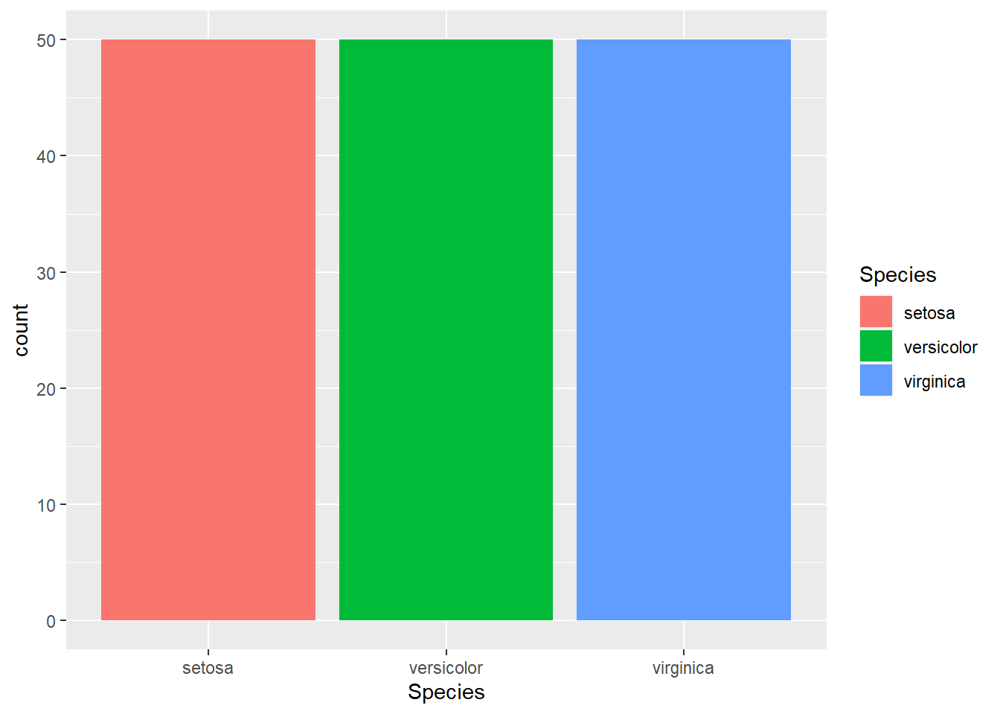

ggplot2による作図
ggplot2とは
Rのplot関数による通常の作図は、他の統計分析ソフトウェアに比べて見栄えが今ひとつです。ggplot2パッケージを利用することで、様々な種類の図を見栄え良く描くことができます。
ggplot2を利用するにはまずggplot2パッケージのインストールと読み込みを行ってください。
install.packages("ggplot2")
library(ggplot2)標準組込データiris
ここでは、Rの標準組込データであるiris（アヤメのデータ）を題材に、ggplot2の関数によるいくつかの作図を紹介していきたいと思います。 Rには、起動時から利用可能ないくつかの標準組込データが備わっており、irisはその中の1つです。irisというオブジェクト（データフレーム）が初めからあるものとして次のように参照することができます。
# irisデータの先頭5行を表示
head(iris,5)## Sepal.Length Sepal.Width Petal.Length Petal.Width Species
## 1 5.1 3.5 1.4 0.2 setosa
## 2 4.9 3.0 1.4 0.2 setosa
## 3 4.7 3.2 1.3 0.2 setosa
## 4 4.6 3.1 1.5 0.2 setosa
## 5 5.0 3.6 1.4 0.2 setosairisデータは3種のアヤメ（setosa, versicolor, virginica）について、種類ごとにがく片・花びらの長さと幅のデータを50件ずつ集めたデータセットであり、以下の5つの列（変数）からなります：
Sepal.Length: がく片の長さ（cm）
Sepal.Width: がく片の幅（cm）
Petal.Length: 花びらの長さ（cm）
Petal.Width: 花びらの幅（cm）
Species: アヤメの種類名（setosa, versicolor, virginica）
ggplot2による作図
基本事項（散布図）
ggplot2では、描画する要素ごとに関数が用意されており、それらを+で繋げることで「重ね描き」する方式となっています。
例として、Rの標準組込データであるirisデータ（アヤメのデータ）について、x軸（横軸）をPetal.Length（花びらの長さ）、y軸（縦軸）をPetal.Width（花びらの幅）とした散布図は次のようにして描くことができます。
# 散布図
ggplot(iris, aes(x=Petal.Length, y=Petal.Width, col=Species, shape=Species)) +
geom_point()
上のコードの1行目のggplot関数は、次のように作図に用いるデータフレームと、x軸やy軸に用いるデータフレームの変数名を指定するものです。
ggplot(データフレーム, aes(x=x軸の変数名, y=y軸の変数名, col=色分けする変数名, shape=点種分けする変数名, …))
そしてggplot関数の後ろに+を付けて、2行目に散布図の点を描くgeom_point関数を加えることで散布図が描かれています。
ggplotによる作図では、通常のplotよりも見栄えが良くなるよう、以下を始めとする様々な工夫が凝らされています。
グラフの背景がグレーになり、白い目盛り補助線が引かれる。
色分けしたときに自動で凡例がグラフ外に作成される（凡例がグラフ内のデータと重ならない）
軸名や目盛りの文字サイズ・文字の向きが見やすいよう調整されている
ggplot関数は、一旦オブジェクトに代入しておいて、+で描画要素を色々と加えてから表示させると便利なことが多いです。例として、上の散布図に折れ線を描くgeom_line関数を加えてから作図してみます。
# 散布図（折れ線付加して作図）
g0 = ggplot(iris, aes(x=Petal.Length, y=Petal.Width, col=Species, shape=Species))
g1 = g0 + geom_point()
g1 + geom_line() # ggplotオブジェクトの表示＝作図となるここでgeom_line関数の代わりに、次のようにgeom_smooth関数を加えると、アヤメの種類(Species)ごとに散布図のデータに当てはめた回帰直線(method=“lm”)が描かれます。なお、それぞれの回帰直線の周りにグレーの帯がありますが、これは回帰直線の推定には誤差があると考えられ、誤差により実際どれだけブレるか（95%信頼区間）を表すものとなっています。
# 散布図（回帰直線付加して作図）
g1 + geom_smooth(method="lm")最後に、次のlab関数を加えることでグラフタイトルや軸名などを追加・変更することもできます。
labs(title=グラフタイトル, x=x軸名, y=y軸名)
# 散布図（グラフタイトル追加・軸名変更して作図）
g1 + labs(title="花びらの長さ・幅の関係", x="花びらの長さ", y="花びらの幅")以上の基本事項を押さえた上で、以降ではグラフの種類別に描画コードの作り方を紹介していきます。
棒グラフ
棒グラフはgeom_bar関数を使って次のように描くことができます。なお、aes関数内のfillは棒の内部の色分けを指定する引数で、colを使うと棒の枠線だけ色分けされてしまうことに注意してください。ここではアヤメの種類は
# 棒グラフ
ggplot(iris, aes(x=Species, fill=Species)) +
geom_bar()
ヒストグラム
ヒストグラムはgeom_histogram関数を使って描くことができます。ヒストグラムの階級幅はbinwidth引数で指定することができます。
# ヒストグラム
ggplot(iris, aes(x=Petal.Length)) +
geom_histogram(binwidth=0.2)箱ひげ図
箱ひげ図はgeom_boxplot関数を使って次のように描くことができます。棒グラフと同様に箱の内部の色分けはfill引数で指定します。
# 箱ひげ図
gbox = ggplot(iris, aes(x=Species, y=Petal.Length, fill=Species)) +
geom_boxplot()
gboxさらにgeom_jitter関数を加えると、実際のデータを「点が被らないよう左右に適当に散らして」表示してくれて、データの細かい様子が確認できます。
# 箱ひげ図（データ点を加えて作図）
gbox + geom_jitter()violinプロット
箱ひげ図はデータの四分位数を箱で示してくれますが、もっと滑らかな曲線でデータの分布を示したい場合にはgeom_violin関数を使ったviolinプロットが便利です。violinプロットではデータの最小値から最大値までの範囲で左右対称な帯を描き、帯の太さでデータの頻度の高さを表しています。箱ひげ図と同様にgeom_jitter関数で各データ点を表示することもできます。
# violinプロット
ggplot(iris, aes(x=Species, y=Petal.Length, fill=Species)) +
geom_violin() +
geom_jitter()